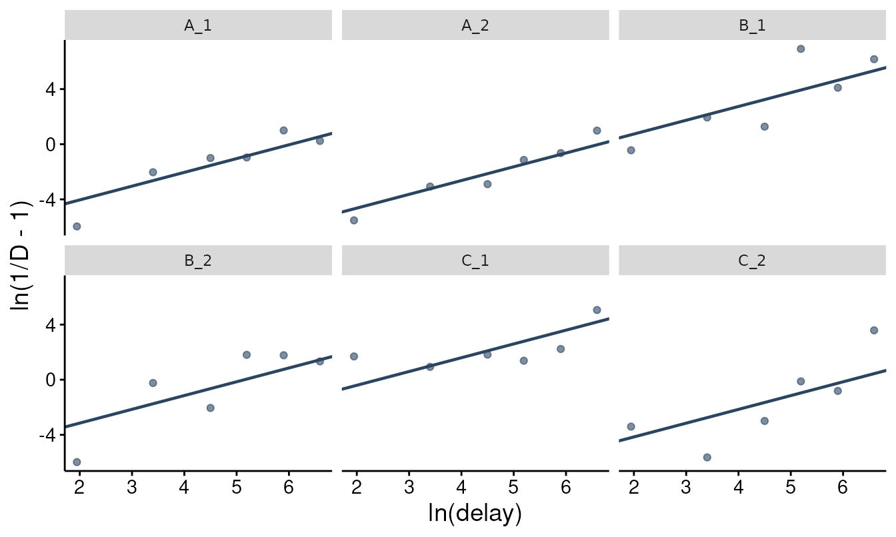
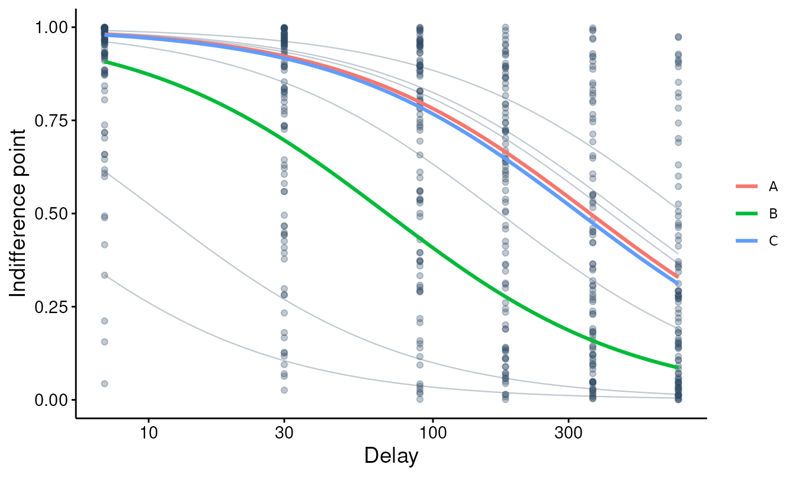
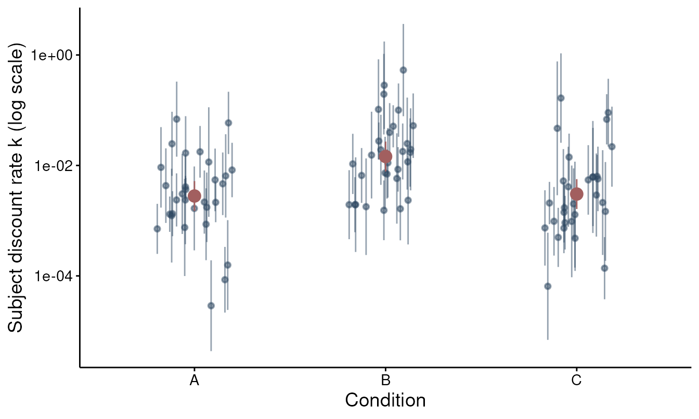

The linearized Mazur hyperbola: closed-form k and an F-test for conditions
Brent Kaplan
Source:vignettes/linearized-mazur.Rmd
linearized-mazur.RmdThe other modeling tiers in beezdiscounting estimate the
discount rate by optimization. fit_dd() fits Mazur’s
hyperbola to each subject by nonlinear least squares, which may fail to
converge for flat or erratic subjects, and fit_dd_tmb()
fits a mixed model whose marginal likelihood has to be maximized
numerically. Hinds et al. (2026) take a different route. They rearrange
the hyperbola so that ln k appears as an intercept, at which point the
per-subject estimate is a mean, the population model is a one-way
random-effects ANOVA with closed-form maximum likelihood estimates, and
condition means can be compared with an F-test whose null distribution
holds at any sample size under the model’s assumptions. No optimizer is
involved anywhere, so there is nothing to fail to converge.
fit_dd_linear() implements that estimator.
This vignette covers (i) the transform and the per-subject estimator, (ii) the random-effects model and the methods that act on a fit, (iii) comparing conditions with the F-test, (iv) what to do with indifference points at exactly 0 or 1, and (v) how the linearized estimates relate to the nonlinear ones.
The transform
Mazur’s (1987) hyperbola gives the discounted value of a delayed
reward as a proportion of its undelayed value,
D = 1 / (1 + k t), where t is the delay and
k is the discount rate. Solving for k and
taking logs,
ln(1 / D - 1) - ln(t) = ln k .Every indifference point, once transformed this way, is a direct read
of ln k. Hinds et al. (2026) treat the transformed points as ln k plus
additive Gaussian error, so the per-subject estimate of ln k is the mean
of the transformed points (equivalently, the geometric mean of
(1 / D - 1) / t). Note that the Gaussian error on the
transformed scale is a modeling assumption, as it is for any other error
model; Section 2 of the paper discusses it, and the last section below
shows what it implies on the raw scale.
To make that concrete, here is one subject drawn from the simulator introduced in the next section, with the transform done by hand:
one <- simulate_dd_linear(1, delays = c(7, 30, 90, 180, 365, 730),
mu = c(demo = -6), sigma2 = 2, g = 10, seed = 3)
one$y_lin <- log(1 / one$y - 1) - log(one$x)
one
#> id condition x y y_lin
#> 1 demo_1 demo 7 0.9980227 -8.169936
#> 2 demo_1 demo 30 0.9818196 -7.390260
#> 3 demo_1 demo 90 0.9925035 -9.385603
#> 4 demo_1 demo 180 0.9077450 -7.479363
#> 5 demo_1 demo 365 0.8598136 -7.713640
#> 6 demo_1 demo 730 0.7393126 -7.635443
mean(one$y_lin)
#> [1] -7.962374fit_dd_linear() returns the same number:
fit_dd_linear(one)$subjects[, c("id", "logk", "se", "ci_lo", "ci_hi")]
#> # A tibble: 1 × 5
#> id logk se ci_lo ci_hi
#> <chr> <dbl> <dbl> <dbl> <dbl>
#> 1 demo_1 -7.96 0.305 -8.75 -7.18The standard error and interval are the usual t-based quantities for
a mean of T observations (here T = 6 delays),
so for a given spread of transformed points a subject measured at more
delays gets a narrower interval.
Simulate a three-condition study
simulate_dd_linear() draws data from the random-effects
model that fit_dd_linear() fits: each subject’s ln k is
drawn around their condition mean mu, and each transformed
point is that subject’s ln k plus Gaussian noise. The model has two
variance parameters. sigma2 is the noise variance on the
transformed scale, and g scales the between-subject
variance, Var(ln k_i) = g * sigma2 / T. The values below
are of the order the paper reports for real data (sigma2
near 2, g near 10). A scalar n_subjects is
recycled across conditions, so this call yields 30 subjects per
condition and 90 in total. Conditions A and C
share a mean; B discounts more steeply by 1.5 on the ln k
scale (a factor of about 4.5 in k).
sim <- simulate_dd_linear(
n_subjects = 30,
delays = c(7, 30, 90, 180, 365, 730),
mu = c(A = -6, B = -4.5, C = -6),
sigma2 = 2,
g = 10,
seed = 1
)
head(sim)
#> id condition x y
#> 1 A_1 A 7 0.9974397
#> 2 A_1 A 30 0.8843580
#> 3 A_1 A 90 0.7316237
#> 4 A_1 A 180 0.7232288
#> 5 A_1 A 365 0.2688872
#> 6 A_1 A 730 0.4405031The layout is the package’s usual long format (id,
x for delay, y for the indifference point on
[0, 1]) plus the condition column.
Fit and inspect
factors names the one between-subject column that
defines the conditions. Two design requirements apply to the
random-effects part of the fit: every subject must appear under exactly
one level (the F-test assumes independent units per condition), and
every subject must contribute the same number of usable delays. A
within-subject factor is rejected with an error; an unbalanced design
(see the boundary section below) returns the per-subject estimates but
leaves the population component unfitted.
fit <- fit_dd_linear(sim, factors = "condition")
fit
#> Linearized Mazur discounting fit (Hinds et al., 2026)
#> 90 units, 6 delays each, factor: condition
#> boundary = "clamp" (eps = 0.005): 0 point(s) at 0/1, 0 clamped, 0 dropped
#> Population ln k (mu):
#> A B C
#> -5.879 -4.232 -5.797
#> sigma2 = 2.145, g = 6.940, logLik(raw) = 382.04The print method reports the design, the boundary bookkeeping
(nothing to report here, as the simulator keeps every point strictly
inside (0, 1)), the condition means mu on the ln k scale,
and the two variance estimates. summary() adds the first
rows of the per-subject table and the population parameters as a
tibble:
summary(fit)
#> Linearized Mazur discounting fit (Hinds et al., 2026)
#> 90 units, 6 delays each, factor: condition
#> boundary = "clamp" (eps = 0.005): 0 point(s) at 0/1, 0 clamped, 0 dropped
#> Population ln k (mu):
#> A B C
#> -5.879 -4.232 -5.797
#> sigma2 = 2.145, g = 6.940, logLik(raw) = 382.04
#>
#> Per-unit ln k (first 10):
#> # A tibble: 10 × 7
#> id condition logk se ci_lo ci_hi n_boundary
#> <chr> <fct> <dbl> <dbl> <dbl> <dbl> <int>
#> 1 A_1 A -6.04 0.431 -7.15 -4.94 0
#> 2 A_10 A -7.19 0.788 -9.22 -5.17 0
#> 3 A_11 A -4.04 0.419 -5.11 -2.96 0
#> 4 A_12 A -5.04 0.676 -6.78 -3.30 0
#> 5 A_13 A -6.70 0.761 -8.65 -4.74 0
#> 6 A_14 A -9.37 0.533 -10.7 -8.00 0
#> 7 A_15 A -2.83 0.505 -4.13 -1.53 0
#> 8 A_16 A -6.35 0.564 -7.80 -4.90 0
#> 9 A_17 A -6.13 0.512 -7.45 -4.81 0
#> 10 A_18 A -4.69 0.653 -6.36 -3.01 0
#>
#> Population parameters:
#> # A tibble: 5 × 2
#> term estimate
#> <chr> <dbl>
#> 1 mu_A -5.88
#> 2 mu_B -4.23
#> 3 mu_C -5.80
#> 4 sigma2 2.14
#> 5 g 6.94coef() returns the condition means and
confint() an interval around each. The paper gives no
population interval, so the package uses the ANOVA-style t-interval on
the per-subject ln k values (between-subject mean square,
N - C degrees of freedom); with
parm = "subject" you get the per-subject intervals
instead.
coef(fit)
#> A B C
#> -5.879258 -4.232474 -5.797496
confint(fit)
#> 2.5 % 97.5 %
#> A -6.501060 -5.257457
#> B -4.854276 -3.610672
#> C -6.419298 -5.175695
head(confint(fit, parm = "subject"), 3)
#> 2.5 % 97.5 %
#> A_1 -7.150000 -4.935422
#> A_10 -9.216172 -5.166594
#> A_11 -5.113410 -2.958965tidy() returns the per-subject table by default
(logk, its se and interval, k
back-transformed with its interval, and n_boundary, the
count of points that sat at 0 or 1), or the population parameters with
effects = "population":
tidy(fit)
#> # A tibble: 90 × 15
#> id condition n_delays n_boundary logk se df ci_lo ci_hi k
#> <chr> <fct> <int> <int> <dbl> <dbl> <dbl> <dbl> <dbl> <dbl>
#> 1 A_1 A 6 0 -6.04 0.431 5 -7.15 -4.94 0.00238
#> 2 A_10 A 6 0 -7.19 0.788 5 -9.22 -5.17 0.000753
#> 3 A_11 A 6 0 -4.04 0.419 5 -5.11 -2.96 0.0177
#> 4 A_12 A 6 0 -5.04 0.676 5 -6.78 -3.30 0.00647
#> 5 A_13 A 6 0 -6.70 0.761 5 -8.65 -4.74 0.00123
#> 6 A_14 A 6 0 -9.37 0.533 5 -10.7 -8.00 0.0000852
#> 7 A_15 A 6 0 -2.83 0.505 5 -4.13 -1.53 0.0589
#> 8 A_16 A 6 0 -6.35 0.564 5 -7.80 -4.90 0.00175
#> 9 A_17 A 6 0 -6.13 0.512 5 -7.45 -4.81 0.00217
#> 10 A_18 A 6 0 -4.69 0.653 5 -6.36 -3.01 0.00923
#> # ℹ 80 more rows
#> # ℹ 5 more variables: k_lo <dbl>, k_hi <dbl>, s2 <dbl>, loglik_y <dbl>,
#> # loglik_raw <dbl>
tidy(fit, effects = "population")
#> # A tibble: 5 × 2
#> term estimate
#> <chr> <dbl>
#> 1 mu_A -5.88
#> 2 mu_B -4.23
#> 3 mu_C -5.80
#> 4 sigma2 2.14
#> 5 g 6.94Because the data were simulated, the estimates can be set beside the values that generated them:
tibble::tibble(
term = c("mu_A", "mu_B", "mu_C", "sigma2", "g"),
truth = c(-6, -4.5, -6, 2, 10),
estimate = tidy(fit, effects = "population")$estimate
)
#> # A tibble: 5 × 3
#> term truth estimate
#> <chr> <dbl> <dbl>
#> 1 mu_A -6 -5.88
#> 2 mu_B -4.5 -4.23
#> 3 mu_C -6 -5.80
#> 4 sigma2 2 2.14
#> 5 g 10 6.94The means and sigma2 are recovered closely;
g is estimated with more uncertainty, as a between-subject
variance from 30 subjects per condition would be under any
estimator.
glance() gives the one-row model summary used across the
package for stacking fits (nobs() returns the count of
usable transformed points, 540 here), and logLik() the
log-likelihood. By default logLik() returns the population
(random-effects) likelihood on the raw indifference-point scale, that
is, corrected by the Jacobian of the transform (paper Section 2.3),
which is what makes it comparable with the Gaussian likelihoods of
fit_dd() and fit_dd_tmb().
scale = "transformed" returns the likelihood of the
transformed points, and level = "subject" the sum of the
per-subject likelihoods (the quantity to set against a per-subject fit
rather than a mixed model).
glance(fit)
#> # A tibble: 1 × 12
#> model_class backend equation nobs n_units n_conditions n_par sigma2 g
#> <chr> <chr> <chr> <int> <int> <int> <int> <dbl> <dbl>
#> 1 beezdiscountin… closed… mazur_l… 540 90 3 5 2.14 6.94
#> # ℹ 3 more variables: logLik <dbl>, AIC <dbl>, BIC <dbl>
logLik(fit)
#> 'log Lik.' 382.0447 (df=5)augment() returns the long data with the transformed
value y_lin, the value actually used after boundary
handling d_used, the fitted indifference point and residual
on the raw scale, .fitted and .resid, and the
standardized residual on the transformed scale, .std_resid
(the residual divided by the model’s error standard deviation,
sqrt(sigma2)). Together with tidy(),
coef() and confint(), this table is what you
need to reproduce or customize the figures that plot()
draws in the Figures section.
head(augment(fit), 3)
#> # A tibble: 3 × 11
#> id x y condition unit y_lin d_used log_jac .fitted .resid
#> <chr> <dbl> <dbl> <fct> <fct> <dbl> <dbl> <dbl> <dbl> <dbl>
#> 1 A_1 7 0.997 A A_1 -7.91 0.997 5.97 0.984 0.0138
#> 2 A_1 30 0.884 A A_1 -5.44 0.884 2.28 0.933 -0.0491
#> 3 A_1 90 0.732 A A_1 -5.50 0.732 1.63 0.824 -0.0923
#> # ℹ 1 more variable: .std_resid <dbl>Comparing conditions
anova() tests whether the condition means are equal. The
statistic is the paper’s F (Proposition 3.5) with C - 1 and
N - C degrees of freedom (here 2 and 87). Under the model’s
assumptions (a balanced design, independent subjects, and Gaussian error
on the transformed scale) its null distribution is F at any
N, with no large-sample approximation involved. The
proposition derives this for a positive between-subject variance
estimate g, which is the usual case; when g is
estimated at 0 the package still reports the statistic but warns.
anova(fit)
#> # A tibble: 1 × 6
#> hypothesis F df1 df2 p_value cohens_d
#> <chr> <dbl> <int> <dbl> <dbl> <dbl>
#> 1 A = B = C 8.80 2 87 0.000331 NAA hypothesis argument restricts the null to a subset of
levels. To test only whether A and C share a
mean (the two conditions the simulation set equal):
anova(fit, hypothesis = list(c("A", "C")))
#> # A tibble: 1 × 6
#> hypothesis F df1 df2 p_value cohens_d
#> <chr> <dbl> <int> <dbl> <dbl> <dbl>
#> 1 A = C 0.0342 1 87 0.854 -0.0485pairwise = TRUE runs every two-level comparison. The
p-values are uncorrected, and each row also reports Cohen’s d on the ln
k scale (the mean difference divided by the between-subject standard
deviation); cohens_d is only defined for two-level
hypotheses, which is why the overall test above shows
NA.
anova(fit, pairwise = TRUE)
#> # A tibble: 3 × 6
#> hypothesis F df1 df2 p_value cohens_d
#> <chr> <dbl> <int> <dbl> <dbl> <dbl>
#> 1 A = B 13.9 1 87 0.000350 -0.977
#> 2 A = C 0.0342 1 87 0.854 -0.0485
#> 3 B = C 12.5 1 87 0.000651 0.929B differs from both A and C at
about one between-subject standard deviation, and A and
C do not differ, which is the structure the simulation
built in. By contrast, the Wald tests in
vignette("dd-group-comparisons") rely on a large-sample
approximation to the sampling distribution. The F-test here needs no
such approximation, and it costs nothing beyond the closed-form fit.
Indifference points at 0 or 1
The transform is undefined at D = 0 and
D = 1 (ln(1 / D - 1) diverges), and the paper
does not address such values. Real titration data contain them. The
package’s dd_ip dataset has 600 points from 100 subjects,
of which 125 are exactly 0 and 4 lie above 1 (the input check clamps
those to 1, with a warning), so 129 points sit on the boundary.
boundary selects one of three policies.
"clamp" (the default) moves an exact 0
to eps and an exact 1 to 1 - eps. Only exact 0
and 1 are touched; an interior point, however close to a bound, is used
as observed. The print method reports how many points were clamped.
data(dd_ip)
fit_clamp <- fit_dd_linear(dd_ip)
#> Warning: Clamped out-of-range y to [0, 1]: 4 value(s) > 1 set to 1, 0 value(s)
#> < 0 set to 0.
fit_clamp
#> Linearized Mazur discounting fit (Hinds et al., 2026)
#> 100 units, 6 delays each
#> boundary = "clamp" (eps = 0.005): 129 point(s) at 0/1, 129 clamped, 0 dropped
#> Population ln k (mu):
#> (all)
#> -1.077
#> sigma2 = 1.090, g = 4.901, logLik(raw) = 932.52"drop" removes boundary points. The
per-subject estimates are still returned, but subjects then differ in
their number of usable delays, the design is no longer balanced, and the
random-effects component is unavailable. The population methods
(coef(), anova(), and the default
confint(), tidy(effects = "population") and
logLik()) then error; the per-subject versions still
work.
fit_drop <- fit_dd_linear(dd_ip, boundary = "drop")
#> Warning: Clamped out-of-range y to [0, 1]: 4 value(s) > 1 set to 1, 0 value(s)
#> < 0 set to 0.
#> Warning: Random-effects component not fitted: design is not balanced after boundary
#> handling.
#> ℹ Per-unit estimates are still returned. `anova()` is unavailable.
fit_drop
#> Linearized Mazur discounting fit (Hinds et al., 2026)
#> 100 units, NA delays each
#> boundary = "drop" (eps = 0.005): 129 point(s) at 0/1, 0 clamped, 129 dropped
#> Random-effects component: not fitted (unbalanced design)"error" refuses the data, which is the
right choice in a pipeline that should never silently impute:
fit_dd_linear(dd_ip, boundary = "error")
#> Warning: Clamped out-of-range y to [0, 1]: 4 value(s) > 1 set to 1, 0 value(s)
#> < 0 set to 0.
#> Error in `.dd_lin_transform()`:
#> ! 129 indifference points equal 0 or 1; the linearized transform is
#> undefined there.
#> ℹ Use `boundary = "clamp"` (default) or `"drop"`, or pre-process the data.With a fifth of the points clamped, the population estimate depends
on where the clamped points are placed. The default eps is
0.005; when ll (the larger-later amount) is supplied it
becomes 1 / (2 * ll), half the smallest step the task could
resolve. The table below refits dd_ip across a range of
eps:
eps_grid <- c(0.001, 0.005, 0.01, 0.05)
tibble::tibble(
eps = eps_grid,
mu = sapply(eps_grid, function(e) coef(fit_dd_linear(dd_ip, eps = e))),
k = exp(mu)
)
#> # A tibble: 4 × 3
#> eps mu k
#> <dbl> <dbl> <dbl>
#> 1 0.001 -0.751 0.472
#> 2 0.005 -1.08 0.341
#> 3 0.01 -1.22 0.296
#> 4 0.05 -1.55 0.212The estimate of ln k moves by 0.8 across this range, which is a
factor of about 2.2 in k. The sensitivity arises when data
with many points on the boundary meet a transform that diverges there
and a clamp policy that has to pick a finite stand-in. A bounded
likelihood needs no eps at all. We recommend setting
eps from the task’s resolution via ll,
reporting the clamped count, and, when boundary points are this common,
preferring a likelihood that treats them as data; see
vignette("sltb-discounting").
Figures
plot() draws the pictures that go with the fit, with the
same arguments as the other indifference-point tiers (type,
ids, n_points, x_trans,
show_observed). The linearization is easiest to see on the
transformed scale. For each subject, ln(1 / D - 1) plotted
against ln(t) should scatter around a line of slope 1 whose
intercept is that subject’s ln k. type = "transformed"
draws that picture, one panel per subject; ids picks the
subjects (without it, the first twelve are shown):

Back on the raw scale, plot(fit) draws the hyperbola
implied by each condition’s geometric-mean k, exp(mu), over
the observed indifference points. type = "individual" adds
each subject’s own hyperbola, 1 / (1 + k x), underneath
(here for the same six subjects):
plot(fit, type = "individual", ids = show)
The third figure answers the study question.
type = "parameters" shows every subject’s k with its
t-interval, by condition, with the condition’s geometric-mean k and its
interval (the exponentiated values from coef() and
confint()) overlaid. The axis is k on a log scale;
coef() and confint() report the same
quantities as ln k.
plot(fit, type = "parameters")
The frames behind these figures come from augment(),
tidy(), coef() and confint(), for
anyone who wants a different picture.
How this relates to the nonlinear fit
The same data fitted subject by subject with fit_dd()
give a second set of per-subject rates. The two estimators target the
same k under different error models: fit_dd()
assumes Gaussian error on the indifference-point scale, whereas
fit_dd_linear() assumes it on the transformed scale, where
a fixed error in ln(1 / D - 1) corresponds to a small
raw-scale error near D = 0.5 and a much smaller one near
the bounds.
nls_fit <- fit_dd(sim, equation = "mazur", method = "two stage")
nls_res <- results_dd(nls_fit)
both <- merge(
tidy(fit)[, c("id", "condition", "logk")],
data.frame(id = nls_res$id, logk_nls = log(nls_res$estimate)),
by = "id"
)
cor(both$logk, both$logk_nls)
#> [1] 0.9540605
head(both)
#> id condition logk logk_nls
#> 1 A_1 A -6.042711 -5.706078
#> 2 A_10 A -7.191383 -7.758400
#> 3 A_11 A -4.036188 -3.711272
#> 4 A_12 A -5.040741 -4.977925
#> 5 A_13 A -6.697647 -7.277038
#> 6 A_14 A -9.370124 -9.702175The two sets of ln k agree closely on these data (r = 0.95), and the
largest disagreements are for subjects with a point very close to 0 or
1, where the two error models weight the observations most differently.
Which error model is closer to the truth is an empirical question. Hinds
et al. (2026) compare the estimators by simulation and on real data, and
we refer the reader there rather than repeating the comparison. A
likelihood comparison between the two is possible because
logLik(fit) is Jacobian-corrected to the indifference-point
scale, which puts it on the same scale as a Gaussian log-likelihood on
the raw points. Comparability also requires that (i) the same
observations enter both fits, (ii) boundary handling is identical, and
(iii) the likelihood levels match (level = "subject"
against a per-subject fit, the default population likelihood against a
mixed model such as fit_dd_tmb()).
Where to go next
-
vignette("dd-group-comparisons")for factor designs, marginal means, and contrasts under the mixed-effects and Bayesian tiers. -
vignette("sltb-discounting")for a bounded likelihood that treats indifference points at 0 and 1 as data rather than as a nuisance. -
vignette("tmb-mixed-effects")for thefit_dd_tmb()workflow, whose log-likelihood is on the same scale aslogLik(fit)here.
References
- Hinds, D., Tegge, A. N., Stein, J. S., LaConte, S. M., McClure, S. M., & Ferreira, M. A. R. (2026). To linearize or not to linearize: That is the Mazur delay discounting question. Journal of Mathematical Psychology, 130, 103006. https://doi.org/10.1016/j.jmp.2026.103006
- Mazur, J. E. (1987). An adjusting procedure for studying delayed reinforcement. In The effect of delay and of intervening events on reinforcement value (pp. 55–73). Lawrence Erlbaum Associates.